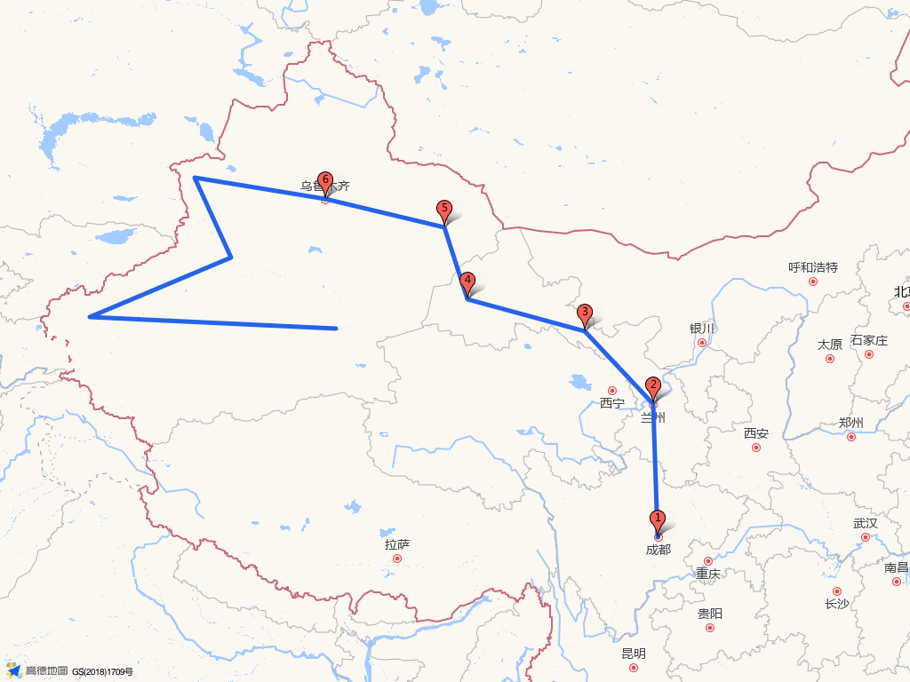

Overview
总览：经典均衡版
01
路线从成都经河西走廊进疆，先完成北疆湖景和伊犁草原，再经独库切入南疆，完成喀什、塔县和南疆东出回程。当前版本用于演示生产闭环，正式出发前必须用高德驾车规划逐日核算。
路线阶段5 段
进疆、北疆、独库、南疆、返程
地图已生成
高德静态总览图，非导航图
风险日6 天
独库、塔县、弱补给、长途
输出竖屏 HTML
手机随车查看
01
成都 → 河西走廊 → 哈密
先拉开长距离，不安排密集景点，控制进疆前疲劳。
先拉开长距离，不安排密集景点，控制进疆前疲劳。
02
乌鲁木齐 → 赛里木湖 → 伊犁
用北疆湖景和草原建立旅行体验，也给车辆和身体一次节奏调整。
用北疆湖景和草原建立旅行体验，也给车辆和身体一次节奏调整。
03
那拉提 → 巴音布鲁克 → 库车
独库南段是核心驾驶日，必须核验开放状态和天气。
独库南段是核心驾驶日，必须核验开放状态和天气。
04
喀什 → 塔县 → 和田 → 若羌
南疆人文和帕米尔高原并重，弱补给路段要提前布置。
南疆人文和帕米尔高原并重，弱补给路段要提前布置。

总览地图已生成：output/maps/overview.png。当前图用于路线理解，正式导航以高德驾车路线核算结果为准。